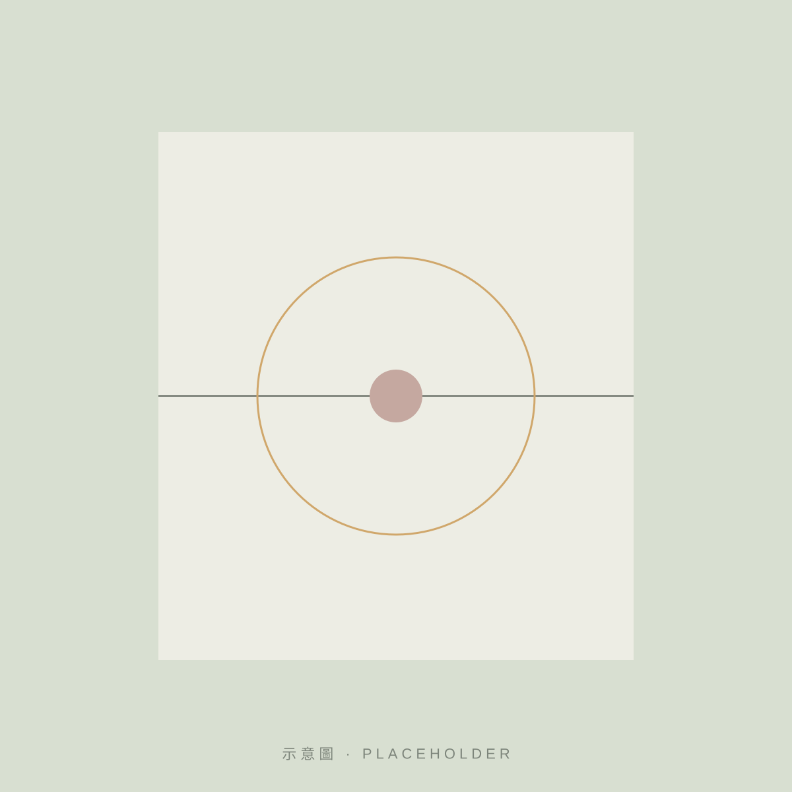

About Us
關於我們
About Taiwan Xinxiang Association
台灣心香協會以藝術、心理探索、生命關懷及自我對話為方向，透過繪畫、色彩、藝術欣賞與創作活動，鼓勵參與者認識自己的感受。
英文名稱 Taiwan Xinxiang Association（暫定譯名，待確認）

01 — Who We Are
協會介紹
台灣心香協會是一個以藝術為媒介的民間團體。我們相信，藝術不只是作品的完成，而是一個認識自己、理解生命及交流情感的過程。
協會舉辦藝術展覽與創作活動，並與教養院、養護及社區場域合作推動藝術陪伴；同時與海外的藝術與教育機構交流，讓不同文化背景的人在作品前相遇。
創立理念
每個人心中都有難以言說的感受。色彩與線條提供了另一種表達的路徑——不必先找到正確的字句，也能讓內在被看見。
「心香」之名，取其由內而發、靜靜散開的意象。協會希望藝術像一縷香氣，從個人的內在出發，延伸到他人與世界。
註：以上為網站建議文案，協會正式宗旨與名稱由來待確認後更新。
02 — Founder & People
創辦人與團隊
以下資料依公開報導整理。職稱、經歷與照片經本人同意與協會確認後補上。
03 — Timeline
歷年發展
金色節點：已有公開資料；玫瑰色節點：細節待確認。
-
年份待確認
協會創立
依公開報導，創辦人為吳淑琴老師。創立年份待協會提供。
細節待確認
-
2023
「2023 愛的世界」展覽
2023/02/16–03/23，於鹿港鎮圖書藝文中心，與星之光藝術空間合作。
-
2023
報導記載理事長
2023 年公開報導記載理事長為江薇玲老師（歷史資料）。
-
2025
巴黎 IESA 藝術交流
公開資料提及於法國巴黎 IESA 藝術文化管理學院進行交流。
細節待確認
-
2025
「舒心．美好藝術成果展」
7 月於衛生福利部南港大樓展出，與雲林教養院藝術成果有關。
細節待確認
-
2026
北加州台灣會館交流
依 2026 合作活動資料，於美國加州推動藝術交流。
細節待確認
-
2026
「和光同塵」藝術聯展
10/01–10/26，國立臺東生活美學館，15 位藝術家、60 餘件作品。
-
2026
官方網站上線
整理歷年展覽、公益行動與國際交流紀錄。
04 — Values
核心價值
01
覺察
Awareness
從留意一個顏色、一個感受開始，練習看見當下的自己。
02
尊重
Respect
每一種表達都值得被接住。我們不評分作品，也不替他人詮釋感受。
03
陪伴
Presence
藝術活動是一段共同在場的時間，重點在過程中的相遇。
04
開放
Openness
跨越年齡、背景與地域，讓藝術成為彼此交流的語言。
05 — Partners
合作與社會參與
依已查證的活動紀錄，協會曾與以下單位在展覽、場地或計畫上合作。列出單位代表曾有活動往來，不代表長期或官方合作夥伴關係。
- 星之光藝術空間2023 愛的世界
- 衛生福利部相關機構藝術陪伴計畫、2025 成果展
- 國立臺東生活美學館2026 和光同塵藝術聯展
- 北加州台灣會館2026 國際交流
- IESA 藝術文化管理學院2025 國際交流